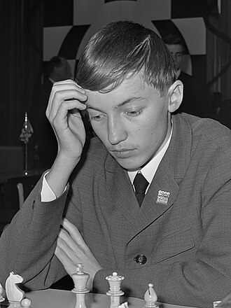
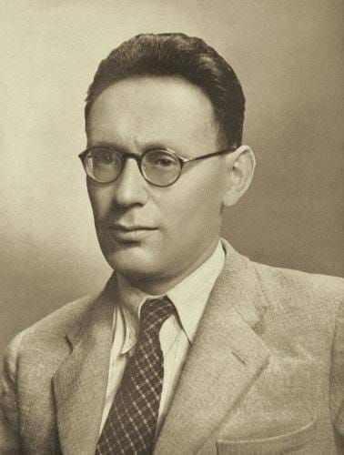

Estratégias no Xadrez
Pense à frente, jogue melhor
O que são estratégias?
As estratégias são planos utilizados pelos jogadores para conquistar vantagens durante uma partida. Elas envolvem observar o tabuleiro, analisar os movimentos do adversário e preparar jogadas.
Um bom jogador não pensa apenas no próximo movimento, mas também nas consequências que suas decisões podem trazer.
Principais estratégias
1. Controle do centro
As casas centrais são importantes porque permitem que as peças tenham maior mobilidade. Controlar o centro ajuda a dominar o espaço do tabuleiro.
2. Desenvolvimento das peças
No início da partida, é importante movimentar cavalos e bispos para posições mais ativas. Isso facilita o desenvolvimento do jogo.
3. Proteção do rei
Manter o rei protegido é essencial. Uma das maneiras mais comuns de fazer isso é realizar o roque, quando permitido.
4. Planejamento das jogadas
Antes de movimentar uma peça, é importante observar as ameaças do adversário e verificar se alguma peça está desprotegida.
5. Criação de ataques
Uma boa estratégia também envolve preparar ameaças, conquistar espaço e aproveitar oportunidades para atacar o adversário.
Dicas de ouro
- Controle o centro.
- Desenvolva suas peças.
- Proteja seu rei.
- Observe as ameaças do adversário.
- Finalize com um xeque-mate!
Grandes mestres do xadrez

Anatoly Karpov
Anatoly Karpov
Anatoly Karpov nasceu em 1951, na antiga União Soviética, e conquistou o título mundial em 1975.
Seu estilo de jogo ficou conhecido pelo posicionamento cuidadoso das peças, pela paciência e pela capacidade de aproveitar pequenas vantagens. Karpov demonstrou que uma partida pode ser vencida com estratégia e precisão.

Mikhail Botvinnik
Mikhail Botvinnik
Mikhail Botvinnik nasceu em 1911 e foi um importante jogador soviético. Conquistou o título mundial em 1948 e teve grande influência no desenvolvimento do xadrez moderno.
Ficou conhecido por sua preparação teórica, disciplina e estudo detalhado das partidas. Também contribuiu para a formação de novas gerações de jogadores.
Por que estudar os grandes mestres?
Estudar as partidas de grandes mestres permite conhecer diferentes estilos de jogo, compreender decisões estratégicas e aprender a analisar melhor as posições no tabuleiro.
Conclusão
O xadrez exige prática, paciência e dedicação. Quanto mais estudamos suas estratégias, melhor compreendemos o jogo e desenvolvemos nossa capacidade de tomar decisões.